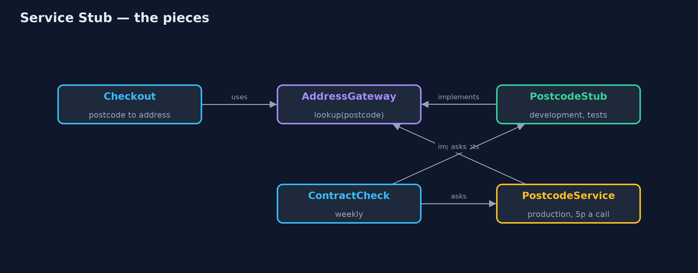
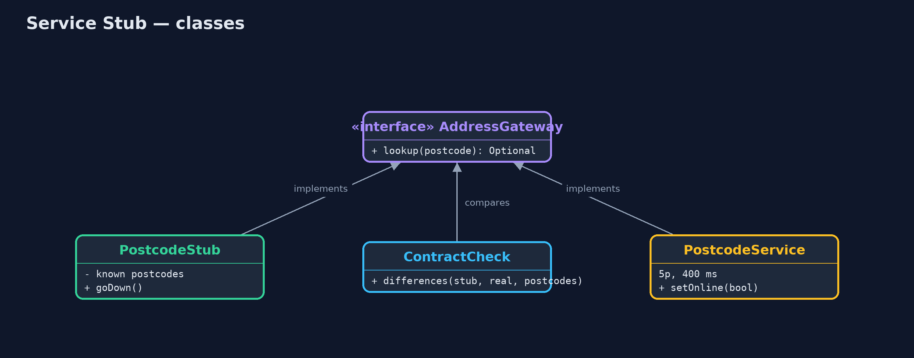
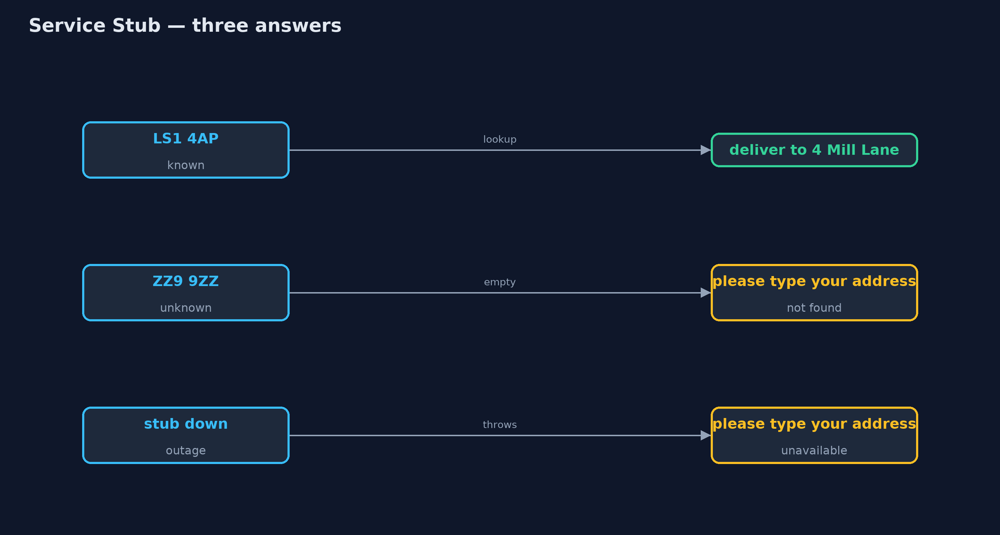
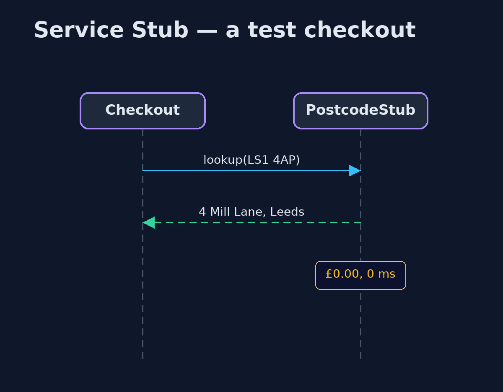

Service Stub Pattern
src/main/java/com/jk/explore/servicestub/
├── AddressGateway.java The shop's one door to the postcode service: a postcode in, an address out, or nothing if unknown
├── Checkout.java The part of checkout that fills in the delivery address from a postcode, and copes when it cannot
├── ContractCheck.java Asks the stub and the real service the same questions and lists where they disagree
├── PostcodeService.java The real, external postcode service: 5p and 400 ms a lookup, needs the network, and insists on capital letters
├── PostcodeStub.java The pattern: a free, instant, in-memory stand-in for the postcode service, used in development and tests
└── ServiceStubDemo.java The five acts: developing against the real service, the stub, edge cases on demand, the contract check, and the billPut an external service behind a gateway interface, and during development and testing plug in a small, free, in-memory stub that behaves like it, checked regularly against the real thing.
Service Stub is one of Martin Fowler's enterprise application patterns. When your code depends on an external service that is slow, costs money per call, or needs the network, you put that service behind a gateway interface. In development and in tests you plug in a stub: a small in-memory class that implements the same interface and answers like the real service would.
The stub is free and instant, works offline, and can be told to behave badly on purpose, so the awkward cases can be tested. Because it is a copy of someone else's behaviour, it must be checked against the real service from time to time.
The idea in everyday terms
Think of a flight simulator. Pilots practise in it every day: it costs nothing to fly, and it can give them an engine failure on demand, which nobody would arrange on a real aircraft. But the simulator is only useful while it behaves like the real plane, so it is checked against the real aircraft's data.
The scenario
At checkout, the online store turns a postcode into an address using an external postcode service. Each lookup costs 5 pence and takes 400 milliseconds, and it needs the network. Developers called it for every test checkout, paid for it, waited for it, and could not work on the train.
Run
./gradlew runThe demo tells the story in 5 acts, each printing exact numbers that the tests check:
| Act | What it shows |
|---|---|
| 1. The real service in development | 50 test checkouts cost £2.50 and 20 seconds of waiting; offline, the lookup is unavailable. |
| 2. A service stub | PostcodeStub implements the same AddressGateway: 50 checkouts, £0.00, no network, no waiting. |
| 3. Awkward cases on demand | The stub answers an unknown postcode and can pretend to be down; checkout asks the customer to type the address. |
| 4. The contract check | Asked the same postcodes, stub and real agree except "ls1 4ap": the stub finds it, the real service errors. |
| 5. The bill | The stub is a second, simpler copy of someone else's service: it must be kept in step and knows only what you gave it. |
Test
./gradlew test8 tests in CheckoutTest, DemoRunsTest. Every number the demo prints is asserted, and nothing depends on the clock, so every run gives the same result.
Technologies and versions
| Technology | Version | Used for |
|---|---|---|
| Java | 21 | the code (toolchain set in build.gradle) |
| Gradle | 9.2.1 (wrapper) | build and run, nothing to install |
| JUnit | 5.10.2 | the tests |
| videokit | repository tool | the narrated video and animation: Piper en_US-amy-medium, speed 0.8, longer pauses (the approved amy-slow voice) |
Learning Material
| Document | What it is for |
|---|---|
| Problem statement | the situation and what the project must show |
| Prerequisites | what you need to know first |
| Service Stub, explained | the acts in prose |
| Session guide | a one-hour lesson with exercises |
| Animated walkthrough | the acts step by step, narrated |
| Spec | what this project must be true of |
The pattern in one picture
Checkout sees only the gateway; the stub or the real service sits behind it.

Where each piece sits
One interface, two implementations, one check between them.

How the data moves
The stub can produce every answer checkout must handle.

Who calls whom, in order
No network, no fee.

Video
video/service-stub-pattern-explained.mp4 (with .m4a audio and .srt subtitles) is built by video/build_video.sh. Rendered media is not committed.
What it costs
- A second copy to keep in step. The stub is someone else's behaviour, rewritten; when the real service changes, the stub does not.
- It only knows what you told it. A handful of postcodes, not millions.
- Stubs can lie. Here the stub accepted small letters, which the real service refuses; only the contract check noticed.
When this is too much
When the real service is free, fast, reliable and available offline, such as a library inside your own program, call it directly. And do not stub your own database or your own code just to make tests fast; stub what is genuinely outside your control.
Where you have already met this
- WireMock and MockServer, which stand in for HTTP services.
- Payment providers' test modes and sandbox accounts.
- LocalStack, which stands in for cloud services on a laptop.
- Pact and other contract-testing tools, which check that stubs still match the real thing.
Where this sits
This project is in enterprise-design-patterns. It is a close relative of the Test Double family: a service stub is a long-lived fake for a whole external service, used for development as well as tests.